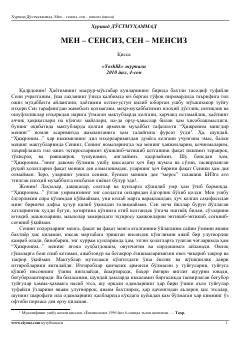

MSIkki sevishgan o'rtasidagi armonga to'la muhabbat va ayriliq haqida qissa.
Bu qissa Xurshid Do'stmuhammadning 'Hijronim mingdir mening' asarining davomi bo'lib, ikki sevishgan o'rtasidagi maktublar va his-tuyg'ular orqali ayriliqdagi muhabbatni tasvirlaydi. Asarda lirik qahramon o'z sevgilisiga murojaat qilib, ularning birga yaratgan dil izhorlarini, soginch va armonga to'la kechinmalarini bayon etadi. Qissa 'Yoshlik' jurnalining 2010 yil 4-sonida nashr etilgan.